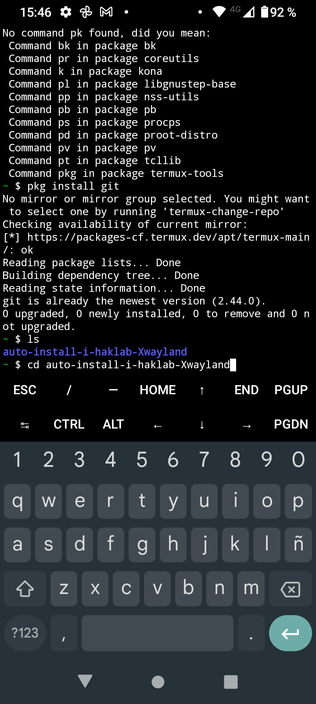
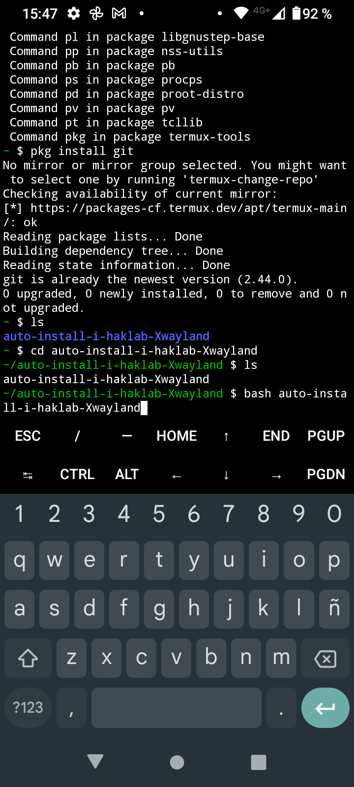

COMO PONER INTERFAZ GRAFICA A TERMUX
Lo primero que vamos a nececitar es tener instaladas las apk,la version 1.18 de termux y termux:X11 aqui te dejo un video de como instalarlos de github CLIC AQUI PARA VER EL VIDEO
Ya instaladas ambas apk vamos a abrir termux y ejecutaremos el siguiente comando
termux-setup-storage
Este comando pedira permisos de almacenamien al aparecer una leyenda le daremos en permitir
Despues de permitir el permiso ejecutaremos el comando
yes|apt update && yes|apt upgrade
este comando actualizara los paquetes de termux y evitar las preguntas que te hace durante la instalacion

ya actualizados los paquetes ejecutaremos el siguiente comando
pkg install git -y
este comando instalara el paquete de git que mas adelante lo nececitaremos para clonar un repositorio
ya instalado el pakete de git ejecutaremos el siguiente comando
git clone https://github.com/alexboook06/auto-install-i-haklab-Xwayland.git
este comando clonara el repositorio que contiene el archivo de instalacion de el laboratorio de hacking i-Haklab y Xwayland que es el que nos permitira ejecutar la interfaz grafica de termux en la app de termu:X11
ya clonado el repocitorio ahora vamos a ejecutar el comando
ls
al ejecutar el comando "ls" veromos que listara las carpetas que tenemos en la HOME de termux y identificaremos la carpeta de descarga
ya identificada vamos a entrar ala carpeta con el comando "cd" mas el nombre de la carpetaque en este caso seria
cd auto-install-i-haklab-Xwayland

Ya dentro de la carpeta volveremos a ejecutar el comando "ls" para que nos liste los archivos dentro de esa carpeta
ls
Despues de ejecutar el comando "ls" nos aparecera el archivo de auto instalacion entonces ejecutaremos el comando
bash auto-install-i-haklab-Xwayland

y empezara la descarga automaticamente ,tenemos que ser pacientes porque la descarga puede demorar
ya finalizada toda la instalacion abriremos una nueva session en termux para poder ingresar al laboratorio de hackin i-Haklab
ya en dentro de el laboratorio nos pedira una contraseña la contraseña se encutra en donde muestra la siguiente imagen
Despues de copiar la contraseña "Ivam3byCinderella" vamos a pegarla y adar en la tecla de enter y ya podremos ejecutar el siguiente comando en i-Haklab
i-Haklab Xwayland
despues de ejecutar el comando "i-Haklab Xwayland" se empezara a descargar el paquete Xwayland
nos aparecera un error pero volvemos a ejecutar el comando
i-Haklab Xwayland
y ahora nos abrira la app de termux:X11 y nos llevara ala interfaz grafica de termux
 y listo ya tienes la interfaz grafica de termux cada que cierres session y quieras volver a entrar solo ejecuta el comando
y listo ya tienes la interfaz grafica de termux cada que cierres session y quieras volver a entrar solo ejecuta el comando
i-Haklab Xwayland
y automaticamente te llevara a la interfaz grafica
si no entendiste o te fallo en la instalacion puedes ver este video para ayudarte
CLIC PARA VER EL VIDEO